ggdemetra3: extending ggplot2 to perform seasonal adjustment with rjdverse packages
Alain Quartier-la-Tente
2026-10-28
Source:vignettes/ggdemetra3.Rmd
ggdemetra3.Rmdggdemetra3 is an extension of ggplot2 to add seasonal
adjustment statistics to your plots.
The seasonal adjustment process is performed using the R packages associated with version 3
of JDemetra+, which is the seasonal adjustment software officially
recommended for members of the European Statistical System (ESS) and the
European System of Central Banks.rjd3x13
is used for X-13, rjd3tramoseats
for TRAMO-SEATS, and rjd3highfreq
for high-frequency seasonal adjustment methods. In addition,
ggdemetra3 provides functions to visualize linear filters,
weights, and trend-cycle estimation tools from the rjd3filters
infrastructure.
Note that ts objects cannot be directly used in
ggplot2. To convert ts or mts
objects to a data.frame, you can use the
ts2df() function. For example, the data
ipi_c_eu_df used in this package is obtained by applying
the ts2df() function to ipi_c_eu:
ipi_c_eu_df <- ts2df(ipi_c_eu)Seasonal adjustment specification
All the functions share some common parameters, especially those defining the seasonal adjustment method:
-
methodis the method used for the seasonal adjustment: X-13ARIMA (method = "x13", the default) or TRAMO-SEATS (method = "tramoseats").
-
specis the seasonal adjustment specification. It can be the name of a pre-defined specification (see?rjd3x13::x13or?rjd3tramoseats::tramoseats) or a user-defined specification.
-
frequencyis the frequency of the input time series. By default, the frequency is computed automatically and a message is printed with the chosen value (usemessage = FALSEto suppress this message).
In the following examples, the data used is the French industrial
production index.
By default, the seasonal adjustment is processed with X-13ARIMA using
the pre-defined specification "rsa3" (automatic log
detection, automatic ARIMA and outlier detection, trading day, and
Easter adjustment).
However, for industrial production, working day effects have more
economic sense than trading day effects, and a gradual Easter effect is
less appropriate for aggregated series.
The recommended specification to use with X-13ARIMA in this case is
spec = rjd3toolkit::set_tradingdays(rjd3x13::spec_x13("rsa3"), option = "workingdays").
If no new data or seasonal adjustment specification (method or spec) is
provided, these parameters are inherited from the previous call:
therefore, you only need to specify them once.
library(ggplot2)
library(ggdemetra3)
p_ipi_fr <- ggplot(data = ipi_c_eu_df, mapping = aes(x = date, y = FR)) +
geom_line() +
labs(title = "Seasonal adjustment of the French industrial production index",
x = NULL, y = NULL)
p_ipi_fr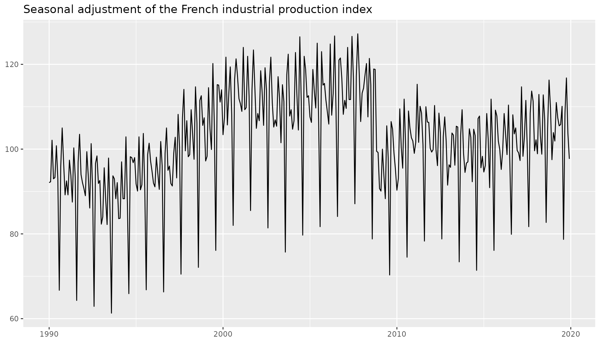
Add the result of the seasonal adjustment
By default, geom_sa() adds the seasonally adjusted time
series:
spec <- rjd3x13::spec_x13("rsa3")
spec <- rjd3toolkit::set_tradingdays(spec, option = "WorkingDays")
p_ipi_fr +
geom_sa(color = "red",
spec = spec)
#> Frequency used: 12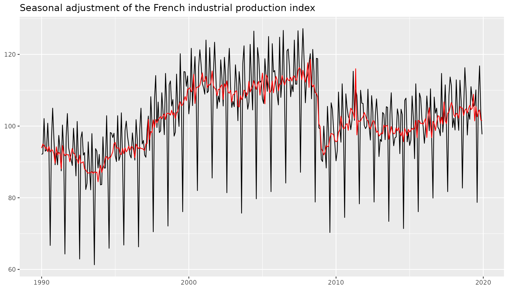
To add other components of the seasonal adjustment, use the
component parameter of geom_sa() (see
?rjd3x13::userdefined_variables_x13() or
?rjd3tramoseats::userdefined_variables_tramoseats() for the
available parameters). For example, to add the forecasts of the input
data and of the seasonally adjusted series:
Add the outliers to the plot
There are four different geometries to add the names of the outliers used in the pre-adjustment process to the plot:
-
geom = "text"(the default) adds directly the names of the outliers, andgeom = "label"draws a rectangle behind the names, making them easier to read.
-
geom = "text_repel"andgeom = "label_repel"do the same, but text labels repel away from each other and away from the data points (see?ggrepel::geom_label_repel).
In our example, there are 3 outliers:
p_sa + geom_outlier(geom = "label")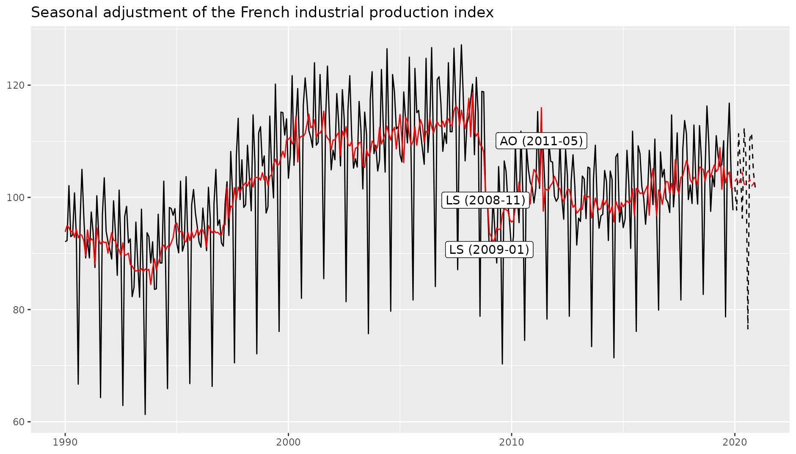
They can be plotted in a more readable way using the parameters of
ggrepel::geom_label_repel:
p_sa +
geom_outlier(geom = "label_repel",
ylim = c(NA, 65), force = 10,
arrow = arrow(length = unit(0.03, "npc"),
type = "closed", ends = "last"))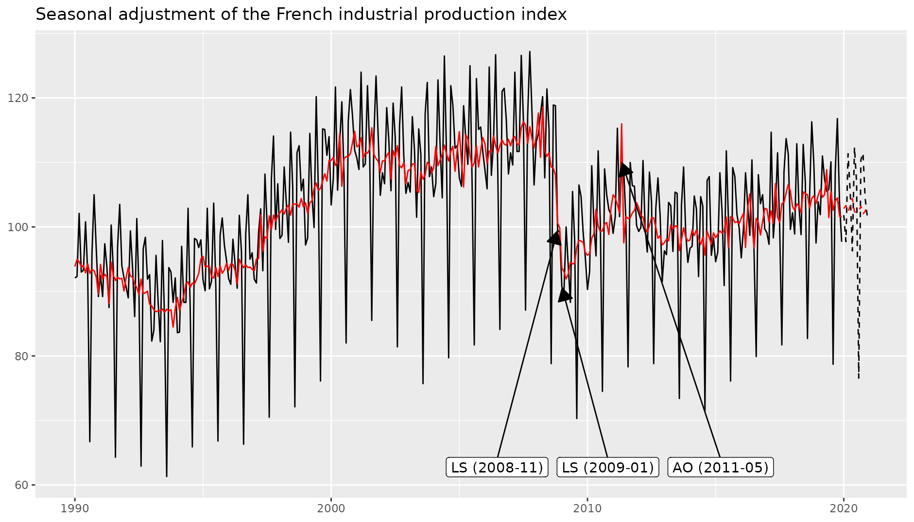
Use the parameters first_date and last_date
to restrict the plotted outliers to a precise time interval. For
example, to only plot outliers from 2009 onwards, use
first_date = 2009:
p_sa +
geom_outlier(geom = "label_repel",
first_date = 2009,
ylim = c(NA, 65), force = 10,
arrow = arrow(length = unit(0.03, "npc"),
type = "closed", ends = "last"))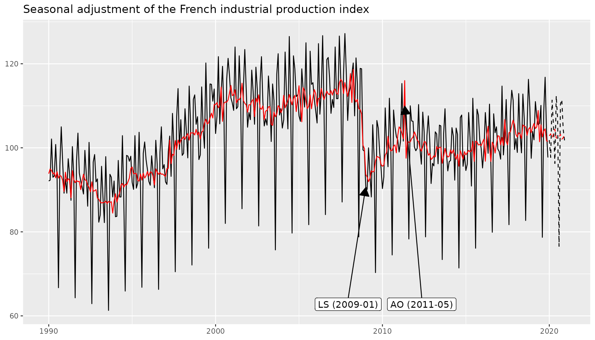
Add the ARIMA model
The ARIMA model used in the pre-adjustment process can be added to
the plot with geom_arima(). The parameter
geom = "label" draws a rectangle behind the ARIMA model,
making it easier to read:
p_sa +
geom_arima(geom = "label",
x_arima = -Inf, y_arima = -Inf,
vjust = -1, hjust = -0.1)Add a table with some diagnostics
A table with diagnostics on the seasonal adjustment process can be
added using geom_diagnostics(). The desired diagnostics
must be passed to the diagnostics parameter (see
?rjd3x13::userdefined_variables_x13() or
?rjd3tramoseats::userdefined_variables_tramoseats() for
available diagnostics). For example, to add the X-11 Q-M2 statistic and
the p-values of the residual seasonality QS and F-tests:
diagnostics <- c("m-statistics.q-m2",
"diagnostics.seas-sa-qs",
"diagnostics.seas-sa-f")
p_sa +
geom_diagnostics(diagnostics = diagnostics,
ymin = 58, ymax = 72, xmin = 2010,
table_theme = gridExtra::ttheme_default(base_size = 8))To customize the names of the diagnostics in the plot, pass a named
vector to the diagnostics parameter:
diagnostics <- c(`Q-M2` = "m-statistics.q-m2",
`Residual qs-test (p-value)` = "diagnostics.seas-sa-qs",
`Residual f-test (p-value)` = "diagnostics.seas-sa-f")
p_sa +
geom_diagnostics(diagnostics = diagnostics,
ymin = 58, ymax = 72, xmin = 2010,
table_theme = gridExtra::ttheme_default(base_size = 8))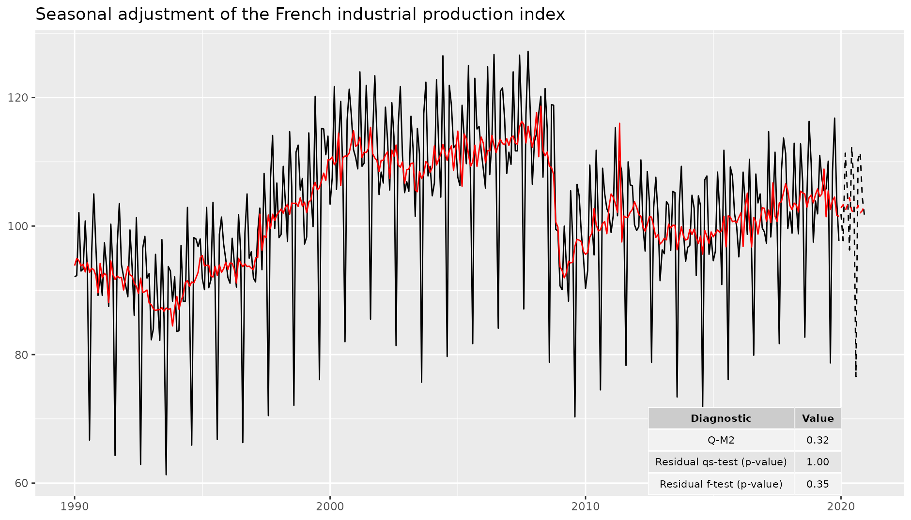
To place the table below the plot, you can use
gridExtra::grid.arrange():
p_diag <- ggplot(data = ipi_c_eu_df, mapping = aes(x = date, y = FR)) +
geom_diagnostics(diagnostics = diagnostics,
spec = spec,
table_theme = gridExtra::ttheme_default(base_size = 8),
message = FALSE) +
theme_void()
gridExtra::grid.arrange(p_sa, p_diag,
nrow = 2, heights = c(4, 1.5))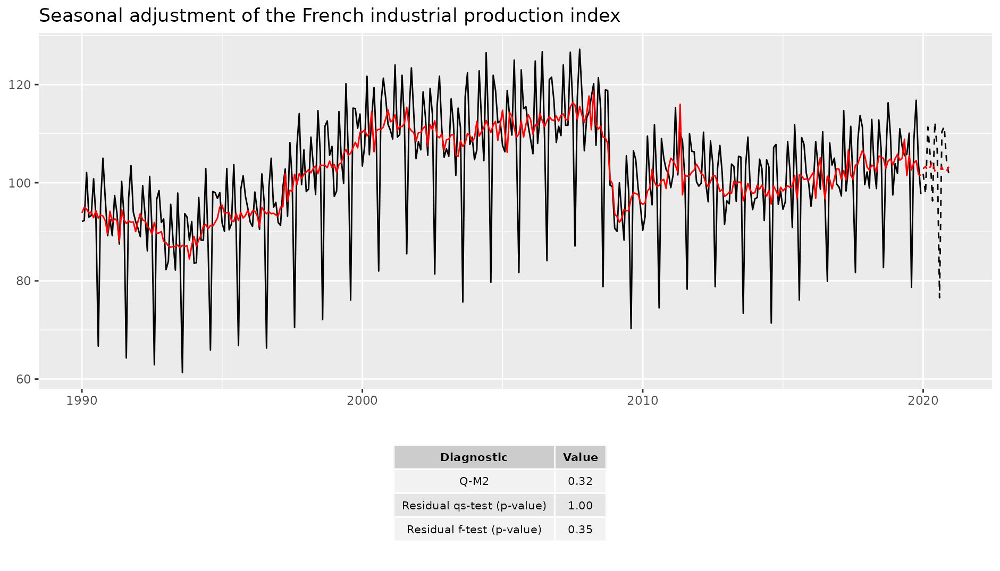
Plot models
The autoplot() function also allows plotting an already
estimated seasonal adjustment model.
The components parameter allows specifying which components
to display:
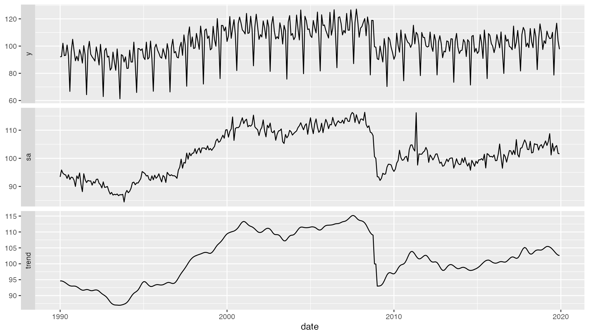
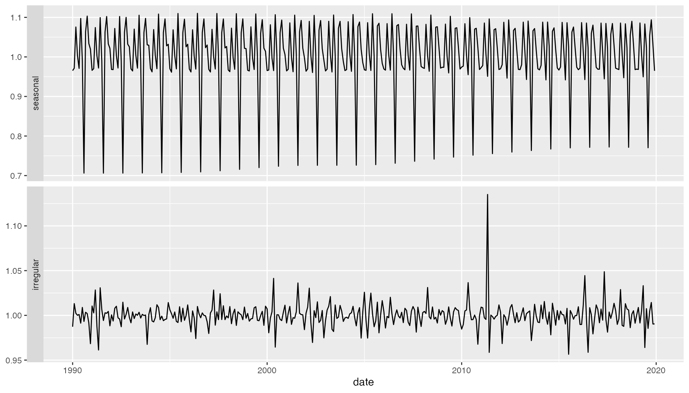
High-frequency seasonal adjustment (rjd3highfreq)
ggdemetra3 also supports high-frequency seasonal
adjustment methods provided by the rjd3highfreq package
(such as fractional airline decomposition, X11-extended, STL, etc.).
For instance, you can decompose high-frequency weekly data (like
usclaims) using geom_sa() with
method = "fractionalairline" and setting
frequency = 52:
p_usclaims <- ggplot(data = usclaims[usclaims$date <= "2019-12-01", ],
mapping = aes(x = date, y = `Initial claims`)) +
geom_line() +
labs(title = "Initial claims (weekly data)", x = NULL, y = NULL)
p_usclaims +
geom_sa(method = "fractionalairline", frequency = 52,
component = "sa", color = "red", message = FALSE)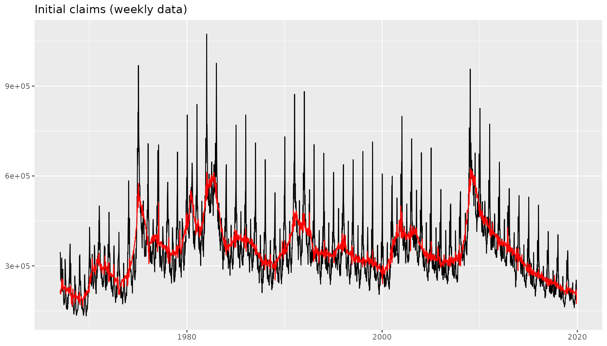
Alternatively, you can compute a decomposition object directly using
rjd3highfreq and visualize it with
autoplot():
mod_hf <- rjd3highfreq::fractional_airline_decomposition(
usclaims[usclaims$date <= "2019-12-01", "Initial claims"],
period = 52
)
autoplot(mod_hf, dates = usclaims$date[usclaims$date <= "2019-12-01"])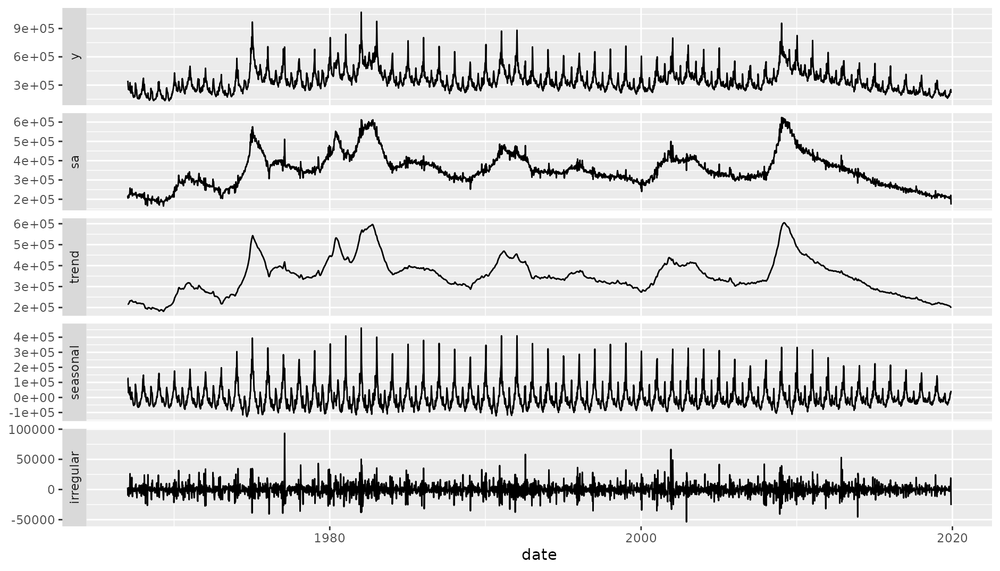